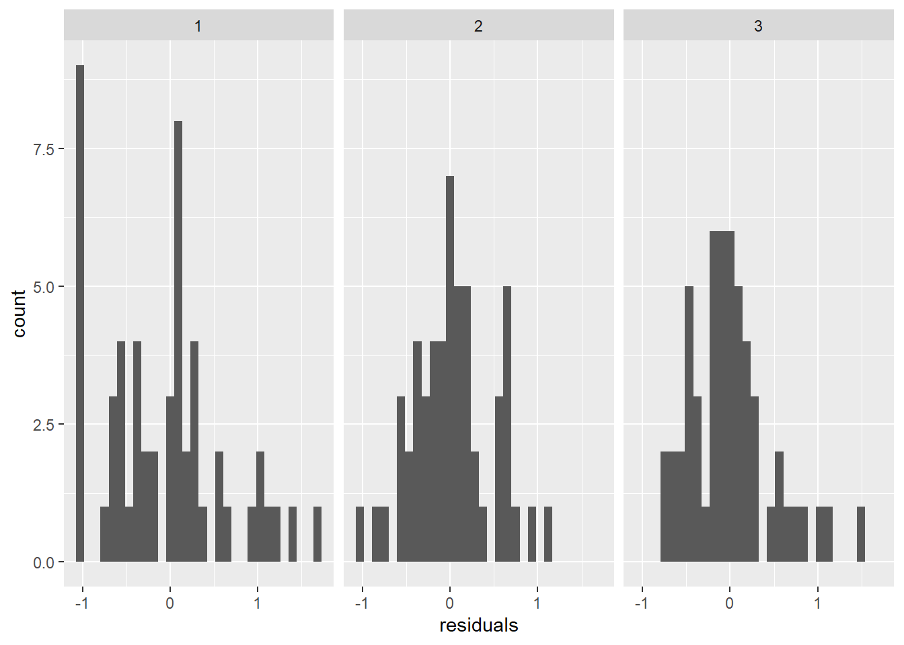
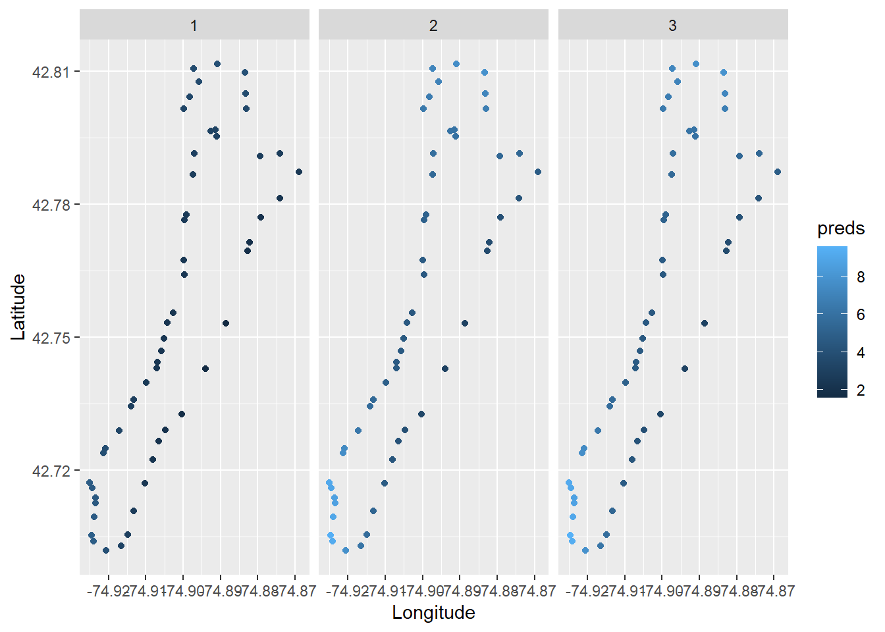
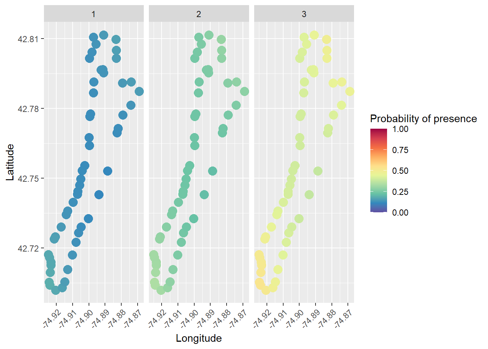

Applications of R for Aquatic Plant Data

Welcome Applications of R for Aquatic Plant data! This module will serve as a tutorial to help you understand how to improve your data and analysis workflows for aquatic plant data in R. In this module, we will read in and manipulate a standard data file format used for point-intercept (rake-toss) surveys, we will demonstrate some basic analyses for species richness and presence-absence data, and we will cover some tools for visualizing results.
Libraries
Let’s go ahead and load the libraries we’ll be working with in the first half of this workshop.
Data
The first data set we’ll work with is from a point-intercept (rake-toss) survey in Otsego Lake, NY, USA during summer 2025. Well…sort of.
The original data were collected by Chii Kojima, an undergraduate at
Mt. Holyoke College and SUNY Oneonta BFS summer intern, and Mairi
Meehan, a professor at SUNY Cobleskill and BFS visiting faculty
researcher. They completed 3 surveys at 54 points throughout the growing
season on the dates included in the data set, with three rake tosses at
each site. They recorded Depth, location
(Longitude and Latitude), and categorical
abundance (Z, T, S,
M, or D) of each species at each site. If you
are not familiar with this categorical abundance scale, the letters
represent Zero, Trace, Sparse, Moderate, and Dense. They wanted to
understand seasonality in plant presence and abundance and whether this
and other factors could be used to improve survey design for long-term
monitoring.
We used the original data to simulate new data using an institutional large language model (LLM, “AI”) to simulate new observations at sites and dates from the survey based on spatial and temporal autocorrelation in the data, with depth as a covariate of abundance, and with permission for all of this from the data originators. As an aside, this was a fun learning experience and the AI ended up using the same methods we would have employed, but ironically it used Python instead of R. And, it did a pretty not bad job of simulating the new data set that we’ll play with. Back on track here.
Read in the simulated data now that we are done with story time:
Have a look at the data set using glimpse(), as shown
below, or you can look at it in data table format using
View(). We’re not showing the output here in our version
because it’s a bit long.
This is a pretty standard point-intercept data set. It is in a somewhat “wide” format. That is, plant species are in columns to the right of all the other aggregated site and event data. The wide format is good for data entry and viewing in spreadsheets, but it is not how we’ll want the data formatted for most of our needs in R.
We’ll first need to get the data set into a longer format to work
with it more easily for most uses in R. This would be a bit of a
copy-paste nightmare in your typical spreadsheet application. But, it is
very easily done using the pivot_longer() function from the
dplyr package. We’re telling R to stack the individual
columns for species 8:ncol(plants) into two columns: one
with species name, and one with categorical abundance. You would need to
change this for a different data set, but could also do things like
identify columns with underscore characters (_) if your
species columns were named similarly.
Presence-absence data
First, we’ll look at how we can work with information about presences and absences of plants at each site on each survey to say something about the plant community. Some common tools for assessing plant communities might include metrics such as species richness or evenness.
To start with, we’ll need to make a new column for presence-absence
data so we can do things like add up species. There are a few different
ways to do this. A succinct approach would be to initialize a new column
that is all zeroes and then replace any zeroes with ones if the
Abundance column contained anything other than
Z. Like this:
# Initialize new column called Presence of all `0`s
long_data$Presence <- 0
# Change this to `1` if Abundance does not equal `Z` for zero
long_data$Presence[long_data$Abundance != "Z"] <- 1We could look at the presence absence data in a few different ways.
First, let’s estimate species richness for each Site and
Survey using the replicate observations
(Toss). We’re also keeping columns for
Longitude and Latitude here so we can play
with those below.
richness <- long_data %>%
group_by(Site, Survey, Toss, Longitude, Latitude) %>%
summarize(Richness = sum(Presence))Now we can make a boxplot to visualize richness across surveys (June, July, August) to see if there are obvious seasonal trends.
This is cool, but you could spend some time to make it a little
prettier. It looks like there is an increase from June through the later
months, but it’s not super clear whether Richness differed
between surveys 2 and 3.
You could formally test for differences among groups using a variety of approaches.
Temporal trends in species richness
The simplest approach, free of distributional assumptions and a lot of other potential statistical pitfalls, would be to use a non-parametric Kruskal-Wallis rank sum test to determine whether there were significant differences in Richness among surveys.
kruskal.test(Richness ~ Survey, data = richness)
Kruskal-Wallis rank sum test
data: Richness by Survey
Kruskal-Wallis chi-squared = 60.202, df = 2, p-value = 8.459e-14This tells us that there were differences among surveys, but it doesn’t give us any statistical information about how richness differed among sites. For that you’d need to use some kind of pairwise comparison like the pairwise Wilcox test. Usually these tests have some kind of adjustment to account for increased Type-I error rate. Here we use a Bonferroni adjustment for p-values, although we are not advocating specifically for that approach (there are a bunch).
pairwise.wilcox.test(x = richness$Richness,
g = richness$Survey,
p.adjust.method = "bonferroni")
Pairwise comparisons using Wilcoxon rank sum test with continuity correction
data: richness$Richness and richness$Survey
1 2
2 3.4e-11 -
3 7.0e-11 1
P value adjustment method: bonferroni This output shows that richness differed significantly between
Survey 1 and Survey 2 (p < 0.001), and
Survey 1 and Survey 3 (p < 0.001), but we
failed to detect a difference in Richness between
Survey 2 and Survey 3 (p = 1). We could fall
back on the boxplot we made above to report these results.
At some point, you’d probably want to account for the fact that species richness observations are based on multiple sites and locations, either by incorporating that into statistical tests directly or as a “random effect” in more complex models.
Spatial trends in species richness
We could also use R to investigate spatial trends in species richness. This requires a little more in-depth knowledge about statistics and modeling, but it is still pretty straightforward to do in R. This type of question is very approachable through use of generalized linear models that include everything from ANOVA, linear regression, and analysis of covariance (ANCOVA) to logistic regression and count models. And, these modeling tools are easy to use in R (maybe too easy) as long as you have a functional understanding of them.
For example, we could use the glm() function to examine
spatial and temporal patterns in species richness pretty easily. We use
a Poisson count model below to demonstrate what this could look
like.
richness_mod <- glm(Richness ~ Longitude*Latitude + factor(Survey),
data = richness,
family = poisson)
summary(richness_mod)
Call:
glm(formula = Richness ~ Longitude * Latitude + factor(Survey),
family = poisson, data = richness)
Coefficients:
Estimate Std. Error z value Pr(>|z|)
(Intercept) -1.844e+06 3.081e+05 -5.985 2.17e-09 ***
Longitude -2.462e+04 4.114e+03 -5.984 2.18e-09 ***
Latitude 4.309e+04 7.207e+03 5.979 2.24e-09 ***
factor(Survey)2 6.620e-01 9.643e-02 6.865 6.66e-12 ***
factor(Survey)3 6.714e-01 9.628e-02 6.974 3.08e-12 ***
Longitude:Latitude 5.752e+02 9.621e+01 5.978 2.25e-09 ***
---
Signif. codes: 0 '***' 0.001 '**' 0.01 '*' 0.05 '.' 0.1 ' ' 1
(Dispersion parameter for poisson family taken to be 1)
Null deviance: 639.03 on 485 degrees of freedom
Residual deviance: 506.18 on 480 degrees of freedom
AIC: 1473.7
Number of Fisher Scoring iterations: 5We could check out the residuals to see whether we are in extreme violation of distributional assumptions. These plots show that the model residuals in Surveys 2 and 3 are more-or-less symmetrical, which aligns with assumptions of the Poisson distribution. But, there are quite a few zeroes in the earliest survey that are expressed as a peak around -1 for survey 1 in the plot below. If this was a real analysis we’d have to be careful about assessing their influence, and may opt for an alternative approach, but this will suffice for the rest of our example for now.
# You can extract model residuals (errors) like this
# and add them to the original data
richness$residuals <- richness_mod$residuals
# That makes it easy to graph the residuals in ggplot!
ggplot(richness, aes(x = residuals)) +
geom_histogram() +
facet_wrap(~Survey)
Then, we could make predictions from the statistical model to visualize the spatial and temporal patterns we found. Here, we’ll just make predictions from the model on the response scale for simplicity (as opposed to the link scale, but that’s a different workshop).
Now, we can plot predicted species richness.
ggplot(richness, aes(x = Longitude, y = Latitude, color = preds)) +
geom_point() +
facet_wrap(~Survey)
Wow, that’s so cool!!! But, there are a bunch of things we can improve, for example adding a color ramp that’s easier to read.
# We could use the RColorBrewer package to make a spectral scale that looks cool
myPalette <- colorRampPalette(rev(brewer.pal(10, "Spectral")))
sc <- scale_colour_gradientn(colours = myPalette(10), limits=c(1, 4),
oob = scales::squish)
# Then we just add it to our ggplot like so, along with a couple of other
# changes in the name of beautiful data visualization
ggplot(richness, aes(x = Longitude, y = Latitude, color = preds)) +
geom_point(size = 4, alpha = 0.85) +
facet_wrap(~Survey) +
sc +
labs(color = "Species Richness") +
theme(axis.text.x = element_text(angle = 45, hjust = 1))Presence-absence for a given species
We could use a similar approach to the one we used above to explore
trends in the presence of individual species as well. To do this, we
could work directly with the Presence column we created in
long_data during data manipulation.
Let’s filter the data set so that we are working with a single species. You can choose a different one to work with, and none of the code that follows should need to change, although your results will likely differ dependent upon species.
The perceived expansion of clasping pondweed (P. richardsonii) following dreissenid mussel invasions and increased water clarity has been a common topic of discussion at basically any gathering around Otsego Lake in recent years, so we’ll check that out here.
Now, we can use the same glm() function that we used to
analyze species richness in the example above, but this time we’ll use a
“binomial” family for logistic regression. It really is that easy to use
in R.
presence_mod <- glm(Presence ~ Longitude * Latitude + factor(Survey),
data = presence_data,
family = binomial)Just as before, we can make predictions from this model. In this case, the response scale is probability of presence.
And, we can now plot probability of presence by site and survey!
# We could use the RColorBrewer package to make a spectral scale that looks cool
myPalette <- colorRampPalette(rev(brewer.pal(10, "Spectral")))
sc <- scale_colour_gradientn(colours = myPalette(10), limits=c(0, 1),
oob = scales::squish)
# Then we just add it to our ggplot like so, along with a couple of other
# changes in the name of beautiful data visualization
ggplot(presence_data, aes(x = Longitude, y = Latitude, color = fit)) +
geom_point(size = 4, alpha = 0.85) +
facet_wrap(~Survey) +
sc +
labs(color = "Probability of presence") +
theme(axis.text.x = element_text(angle = 45, hjust = 1))
Isn’t that cool?
Summary
In this module, we’ve walked through the process of data read, manipulation of a standard point-intercept data format, and examined multiple ways to analyze and visualize species richness and individual species presence-absence data. This should give you an appreciation for the power and diversity at your disposal in R. And, this is really just scratching the surface of the tools that are available to address these needs in R. And, hopefully, you have the confidence to start exploring more of those tools having been oriented to some of them!
This work is licensed under a Creative Commons Attribution 4.0 International License. Data are provided for educational purposes only unless otherwise noted.